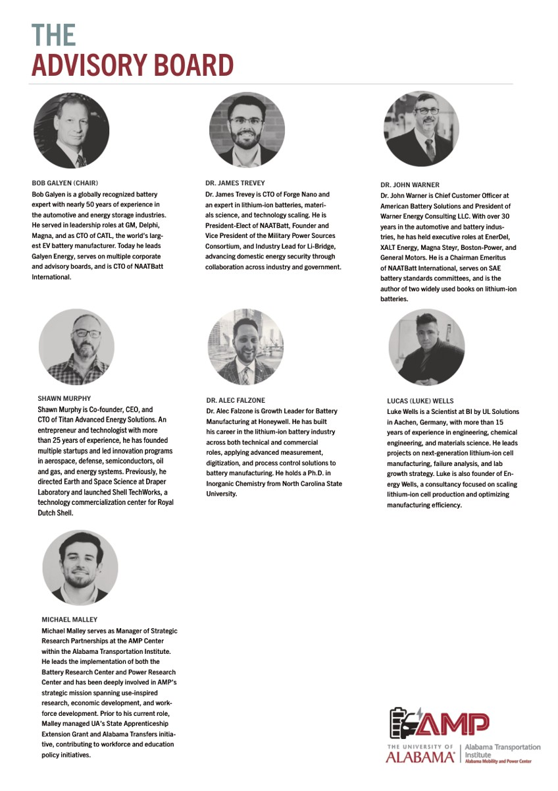

Bob Galyen
Chair
Globally recognized battery expert; leads Galyen Energy and serves as CTO of NAATBatt International.
People behind the packet
This page collects the advisory board, workforce committee, and power research lab committee into one directory pulled from the AMP source packet.

Advisory board
These profiles come from the AMP advisory board program page.
Chair
Globally recognized battery expert; leads Galyen Energy and serves as CTO of NAATBatt International.
Forge Nano / NAATBatt
CTO of Forge Nano, expert in lithium-ion batteries, materials science, and scaling technology into production.
American Battery Solutions
Chief Customer Officer and veteran battery-industry executive with 30+ years across automotive and energy storage.
Titan Advanced Energy Solutions
Co-founder, CEO, and CTO focused on startup innovation across aerospace, defense, semiconductors, and energy systems.
Honeywell
Growth leader for battery manufacturing, applying advanced measurement, digitization, and process control to production.
BI by UL Solutions / Energy Wells
Scientist and founder focused on next-generation lithium-ion cell manufacturing, failure analysis, and scale-up strategy.
AMP Center
Manager of Strategic Research Partnerships leading the Battery Research Center and Power Research Center missions.
Workforce development

Deputy Director, AIDT
Supports industrial recruitment and training tied to advanced manufacturing and the EV/battery ecosystem.

Chief Workforce Development Officer
Helps lead state workforce education and training initiatives through the Alabama Community College System.

The University of Alabama
Associate Professor and Associate Director of CAVT, specializing in engineering and applied research.

Volta Foundation
Vice President of Business Operation helping connect leaders across the battery ecosystem and workforce community.
Argonne National Laboratory
Senior Program Director of the Battery Workforce Challenge, building domestic battery manufacturing talent pipelines.
Workforce Program Manager, AMP Center
Leads talent-pipeline development for battery manufacturing, electrification, and advanced power systems.
Power research lab

Chief Technologist, SPOC Grid Inverter Technologies
Leads advanced energy storage, power electronics, and grid-integrated electrification solutions.

Energy Safety Response Group
Focuses on battery safety, hazard mitigation, and emergency response training across the storage ecosystem.

Energy Services Manager, Alabama Power
Works on grid modernization and customer-focused energy solutions for evolving power demand.

Business Development, Amphenol
Brings interconnect and sensor expertise supporting EVs, electrification, and advanced manufacturing.
Head of Power Systems, SPOC Energy
Works on advanced power conversion technologies for grid resiliency and scalable electrification infrastructure.
UA High Performance Computing and Data Center
Leads a new facility connecting advanced computing, AI, and data science with research and industry use cases.
Senior Vice President of Sales, eVerged
Advances EV charging innovation and deployment, including autonomous and portable charging solutions.
Director of Research Programs, AMP Center
Leads industry-aligned research initiatives and bridges academic research with real-world application.